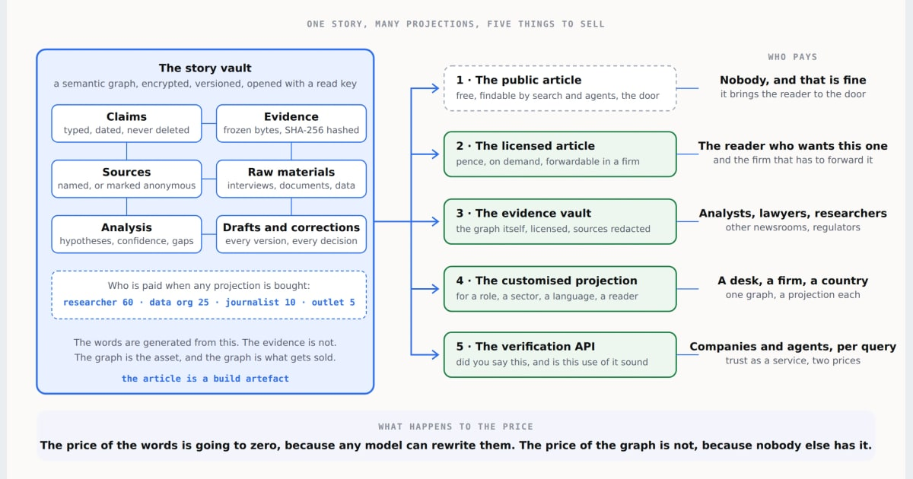
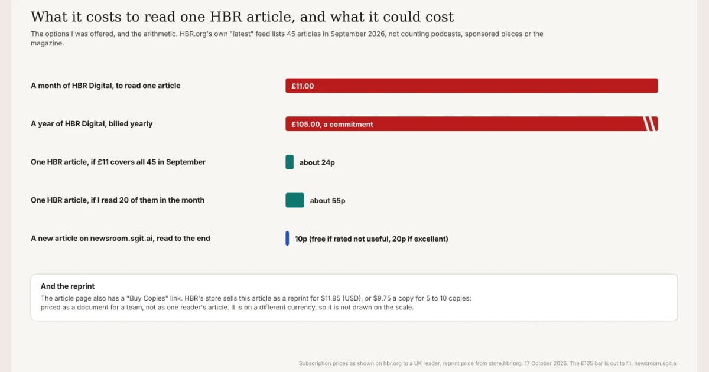
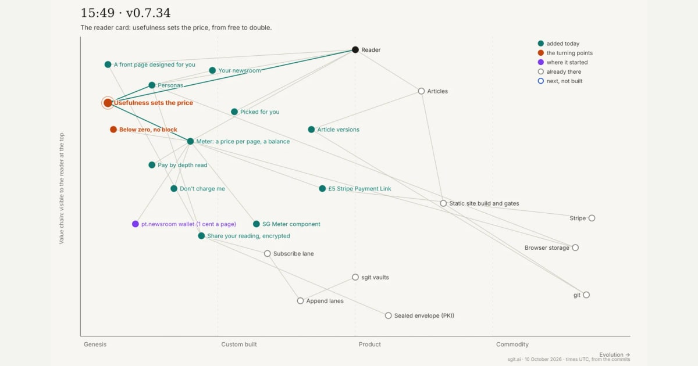
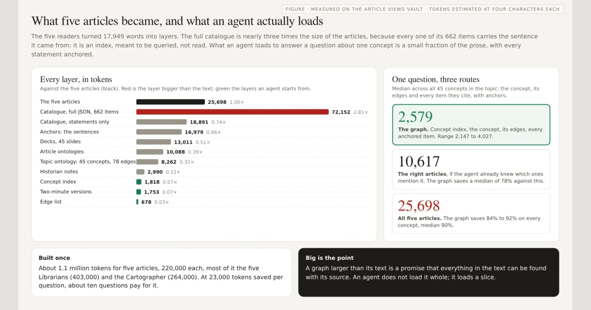
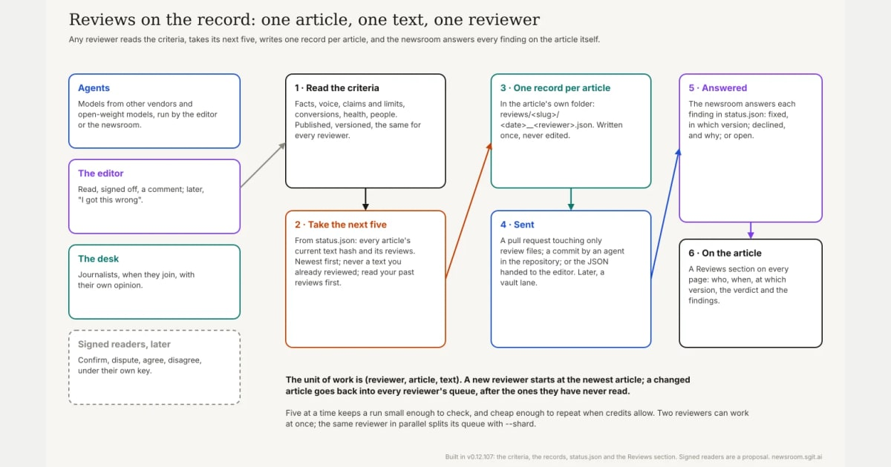

Home / Sections / For publishers
A section
For publishers
For editors, publishers and anyone running a news business who wants to see what a newsroom built with agents looks like, how it gets paid, and what they could copy.
This site is a newsroom that runs in the open: written from the editor's voice memos by a desk of agents, every source linked, every version kept, read with a meter that charges for what was read. It changes most days. This section keeps the pieces a publisher needs in one place, and it keeps itself current: new articles are placed here by their tags and desk as they are published, and new features appear as they ship.
88 articles in this section, 25 in the last 7 days; 20 features you can use today. Built 2026-10-25. The overview: what is live and how to try it.
Start here
Five pieces, chosen by the editor, for a first visit.

The future of news is the story vault, not the paywall
2026-09-22 · 35 min · AnalysisThe founding argument: the story is a graph of claims and evidence, and the article is one view of it.

I just want to buy the article
2026-10-17 · 10 min · AnalysisWhy a reader who wants one article is offered a subscription, the arithmetic of 24p to 55p, and ten things a publisher could sell instead.

Pay after you read
2026-10-10 · 18 min · Field reportThe reading meter as a working model: pay after you read, and the rating sets the price.

The agent is the reader
2026-10-11 · 19 min · AnalysisAgents will pay to read, because a curated graph is cheaper for them than the raw web.

Reviews on the record new
2026-10-18 · 9 min · AnalysisHow quality control works when agents write: reviews by other models and the editor, on the record.
Latest
The newest pieces in this section, placed as they were published.
- A call for help: journalists, editors, students and teachers wanted for a live newsroom run with agents, where every role should have a human, we cannot pay yet, and what we can offer instead new
2026-10-25 · 4 min · Analysis · How news gets paid for - Own the stack, and the trust: a reply to Bert Kok on who gets paid for journalism when AI sits between the newsroom and the reader, with agents that augment journalists rather than replace them, and a tour of what we have built new
2026-10-25 · 8 min · Answer · Answers to the industry - Local trust, certified upwards: why local and niche publishers should take everything that has become commodity, certify the big outlets' stories about their patch and be paid for it, and why stories, like software, need someone to maintain them new
2026-10-25 · 7 min · Analysis · How news gets paid for - Sources and their shadows: the licence, the access, the links and the quotes of every reference, how a paywalled article can be seen through what others say about it, and paying the sources we use new
2026-10-25 · 8 min · Analysis · How news gets paid for - A newsroom for one: the reading list I send by email became the first page of this newsroom for the people I write to, so it now says what it is, shows what they have read, and asks for an answer new
2026-10-24 · 12 min · Analysis · Readers, personas and the reading account - How a memo becomes a release: the newsroom's pipeline end to end, what runs in the session and what runs on GitHub, how long each part takes, and what a new session would be missing new
2026-10-21 · 10 min · Analysis · How this newsroom runs - v0.12 in numbers: 159 releases in eight days, 131 articles, 292,000 words, and what the data says about how an agent-run newsroom works new
2026-10-20 · 7 min · Analysis · How this newsroom runs - Open source what you build, even while you are employed: nobody copies it, and it is the only way you get to keep using it new
2026-10-19 · 6 min · Analysis · How this newsroom runs - A website to finish the book: gen-z-developers.sgit.ai, where the released book lives in the repository, the working book lives in a vault, and agents help me review it at every altitude new
2026-10-18 · 5 min · Analysis · How this newsroom runs - A book for one reader: a personalised edition of Generation Z Developers, assembled by an agent for one person, and paid for as it is read new
2026-10-18 · 4 min · Analysis · Readers, personas and the reading account
What you can use today
Features of this site a publisher can try, and copy; each with when it shipped and the article that explains it.
- The reading meter Live · since 2026-10-10
Pence per page for the share actually read, after reading, from a balance kept in the reader's own browser that can go below zero; the reader's rating sets the price. A £5 top-up on Stripe.
Payment for one article, after its value is in view, with no account and no paywall.
- Your reading, folded Live · since v0.12.99
Come back to an article and the sections you have read can show as a margin line, faded, folded to a paragraph or a line, or hidden; chosen once in the chip's Settings, for every article or for one, and never applied while you are reading forward.
A returning reader sees only what is new to them, and the article stays whole.
- A line and a paragraph for every section Live · since v0.12.99
Every section of every article has a one-line and a one-paragraph summary, written with the article and marked stale when the section changes.
What the folded views show, and what search and agents can use instead of the whole text.
- Every version kept Live
Every article keeps its earlier versions, each with a page that shows what changed.
A correction is visible, dated and linkable, not a silent edit.
- Reviews on the record Live · since v0.12.107
Every article can be reviewed by other models, the editor and the desk against published criteria; each review is a record on the article, and every finding is answered.
Quality control that readers can see, and that does not repeat itself.
- A graph of every argument Live
Every article has a graph of its ideas, the relations between them, its links and two exact quotes, as JSON.
A reader, a search or an agent can follow the argument, not just the words.
- Readable by agents Live
Every page has a markdown twin, the site has llms.txt and llms-full.txt, and articles carry dates, hashes and graphs.
Agents can read the site for a fraction of the tokens, which is what makes charging them possible.
- Read as a persona Live
A link that opens the newsroom as a persona, a CISO, a founder, a journalist, with its own lens and list, kept in the reader's browser.
Send each reader the newsroom as it matters to them.
- A reading list in a link Live
A link from one person to another that opens the newsroom as a list to read in order, with a note; the names and numbers stay in the part of the address the server never sees.
Recommendation without tracking.
- Your reading, in your vault Live · since 2026-10-12
The reading account, notes and personas carried between the reader's devices in an encrypted vault opened with a passkey; the newsroom holds no key to it.
A reader's history the reader owns, on every device.
- Notes to the newsroom Live · since v0.12.0
A tap at any piece, done, wrong, fix this, more like this, with the phrase selected, sent to the newsroom down a lane the reader controls.
Feedback attached to the sentence it is about.
- The wires Beta · since 2026-10-11
Four wires written by agents and labelled as such: industry, OWASP, AWS and Portugal, each story with its primary source, one exact quote and why it matters.
A beat covered every day, with its sources open.
- Search in the browser Live · since v0.12.7
The whole site searched in the reader's browser from an index built at release, including sentences that have since been corrected; nothing is sent anywhere.
Search with no server and no query log.
- Fix the page yourself Live · since 2026-10-17
A small JavaScript API of the page's primitives, and bookmarklets that use it, so a reader can change what they need in a line.
The next user experience is the one the reader customises.
- Ask the site Live · since v0.12.9
Answers from the newsroom's own passages, each cited, with the model built into Chrome or the reader's own key for a hosted model; the key stays in the reader's browser.
A question answered from what was published, with the sources on screen, and no query sent to us.
- Who is speaking Live · since v0.12.85
Agents that write under their own names have a page each and a section of their own; everything else is written from the editor's voice memos and published under his name, with the responsibility his.
A reader can tell whose voice an article is in.
- Sections by audience Live · since v0.12.108
The newsroom as one audience reads it: five to start with, the latest, the features they can use, and every relevant article placed by written rules, each saying which rule placed it.
A page to send someone new that keeps itself current.
- The briefs, in the open Live · since v0.12.109
Everything the newsroom has asked of itself, audited from the code: built, partly built or not, each with what remains and a brief a session can start from.
The roadmap and its state, public and checkable.
- A version history for a page Live · since v0.12.113
The page for publishers keeps every version of its text with what changed between them, and records what its live parts did in each release.
A page that is sent to people can be held to what it said on the day it was sent.
- Series by tag Live · since v0.12.118
Articles that belong together carry one tag; each shows a thin bar under its byline, with the previous and next articles, and the full list at its foot, kept current by the build.
A reader who lands on one article of a series finds the others without searching.
Designed, not running yet
- Search as navigation: A walk through the newsroom's graph: chips, exact suggestions, five views of one result and a pane that shows the working. The design
- Opinions on the record: Experts go on the record on an article with a signed opinion, paid when readers value it. The design
- The editor's channel: An editor's reads, sign-offs and fixes reach the newsroom's agent through a vault, and a daily pass acts and replies. The design
Answers to the industry 4
Point-by-point replies to published arguments about news and publishing.
- Own the stack, and the trust: a reply to Bert Kok on who gets paid for journalism when AI sits between the newsroom and the reader, with agents that augment journalists rather than replace them, and a tour of what we have built new
2026-10-25 · 8 min · Answer
Placed because: format response; on the news desk - The article remains a product: Jonathan Palmer's four outputs for a newsroom with no human readers, checked against one that runs
2026-10-11 · 15 min · Answer
Placed because: format response; on the news desk - Liquid content needs water: liquefy the journalist's notebook, not the finished product
2026-10-07 · 10 min · Answer
Placed because: format response; on the news desk - Story vault underneath, Reader Skills on top: why local journalism has the most to gain
2026-10-07 · 10 min · Answer
Placed because: format response; on the news desk
How news gets paid for 24
Business models, the reading meter, micropayments, and what agents reading the web means for revenue.
- A call for help: journalists, editors, students and teachers wanted for a live newsroom run with agents, where every role should have a human, we cannot pay yet, and what we can offer instead new
2026-10-25 · 4 min · Analysis
Placed because: tagged journalism; on the news desk - Local trust, certified upwards: why local and niche publishers should take everything that has become commodity, certify the big outlets' stories about their patch and be paid for it, and why stories, like software, need someone to maintain them new
2026-10-25 · 7 min · Analysis
Placed because: tagged local-news - Sources and their shadows: the licence, the access, the links and the quotes of every reference, how a paywalled article can be seen through what others say about it, and paying the sources we use new
2026-10-25 · 8 min · Analysis
Placed because: tagged micropayments - Your reading, your controls: the meter charges for what you read, you can pause or reset it, and what you have read folds away in six ways
2026-10-17 · 14 min · Analysis
Placed because: tagged micropayments - I just want to buy the article: what happened when I tried to pay Harvard Business Review for one piece I wanted to answer, the arithmetic of a subscription, and ten things HBR could sell a reader like me, most of them already running on this newsroom
2026-10-17 · 10 min · Analysis
Placed because: tagged micropayments - Scrolled is not read: what the reading meter measures, what it should, highlights you can keep, and the page as the reader's own graph
2026-10-16 · 20 min · Analysis
Placed because: tagged micropayments - Inside the Mesa Ranch desk: a page-by-page tour of an observation vault, from the cover to the knowledge graph you can play in time
2026-10-15 · 10 min · How-to
Placed because: tagged local-news - When journalism becomes intelligence, built: an observation desk for one data-center buildout, from an atlas of 78 events to a community impact tracker, in a vault you can open
2026-10-15 · 9 min · Analysis
Placed because: tagged local-news - Paying after the value: why a balance that can go negative feels different from a subscription, the psychology behind it, and the experiment this newsroom is running
2026-10-14 · 8 min · Analysis
Placed because: tagged micropayments - Firing journalists is the worst thing a publication can do: what a hiring decision says about where a publisher is going, and who to hire instead
2026-10-12 · 10 min · Analysis
Placed because: tagged journalism; on the news desk - Brief the agent too: the people I talk to work with agents, so what I send has to reach both
2026-10-11 · 10 min · Analysis
Placed because: tagged agent-readable-web; on the news desk - The agent is the reader: why agents will pay for graphs, personas and signed claims, because it is cheaper than not paying
2026-10-11 · 19 min · Analysis
Placed because: tagged micropayments - Pay after you read: how a reading meter became a working business model in one afternoon, one release at a time
2026-10-10 · 18 min · Field report
Placed because: tagged micropayments - Pay to keep your persona: readers should pay because it helps them, not because they feel they should
2026-10-10 · 9 min · Analysis
Placed because: tagged micropayments - Who will game the reading meter? Eight kinds of reader, nine ways to cheat, and the risks that will actually happen
2026-10-10 · 10 min · Analysis
Placed because: tagged micropayments - Going live with the reading meter: pay for what you read, go below zero if you like, and the numbers we will check in eight weeks
2026-10-10 · 13 min · Field report
Placed because: tagged micropayments - Open source is not free: who pays to keep the long tail working?
2026-10-10 · 18 min · Analysis
Placed because: tagged micropayments - One article, five readers: a librarian, a cartographer, a historian, an explainer and a storyteller read the same piece
2026-10-10 · 15 min · Explainer
Placed because: tagged story-vault - A meter in the browser: a penny a page, a history you keep, and a site that picks for you
2026-10-10 · 5 min · Field report
Placed because: tagged micropayments - The waiting room knew first: a live local story, and the gap where local information used to be
2026-10-08 · 10 min · Field report
Placed because: tagged story-vault, local-news - The bridge, followed to the end: what one local story is worth when it is kept as a graph
2026-10-07 · 17 min · Analysis
Placed because: tagged micropayments, story-vault, local-news - The deck I could not download: an author-first home for presentations, as a business plan somebody else can build
2026-10-06 · 17 min · Business plan
Placed because: tagged micropayments - The reader was always the product: a corrected history of how news got into this mess
2026-09-29 · 19 min · Analysis
Placed because: tagged micropayments - The future of news is the story vault, not the paywall
2026-09-22 · 35 min · Analysis
Placed because: tagged micropayments
Readers, personas and the reading account 10
How a reader reads here: personas, reading lists, the vault and the meter's controls.
- A newsroom for one: the reading list I send by email became the first page of this newsroom for the people I write to, so it now says what it is, shows what they have read, and asks for an answer new
2026-10-24 · 12 min · Analysis
Placed because: tagged personas; on the news desk - A book for one reader: a personalised edition of Generation Z Developers, assembled by an agent for one person, and paid for as it is read new
2026-10-18 · 4 min · Analysis
Placed because: tagged personas; on the news desk - Not a straight line: working for RiskMandate by working on the newsroom, and why the thinking is never wasted
2026-10-12 · 11 min · Analysis
Placed because: tagged personas; on the news desk - Places of highest leverage: where to focus when the agents can go in every direction, told with three days of real steps
2026-10-12 · 11 min · Analysis
Placed because: tagged personas; on the news desk - Ways to read one article: the finished piece stays at the centre, and the reader picks the way in
2026-10-12 · 10 min · Analysis
Placed because: tagged personas; on the news desk - The site is an inbox: deciding before reading, marks that build the reader's own graph, and why I could not write this brief until the vault existed
2026-10-12 · 13 min · Analysis
Placed because: tagged personas; on the news desk - Two agents, one vault: the Industry Wire is written into an encrypted vault by one agent and drawn by newsroom.sgit.ai, which holds only the read key
2026-10-12 · 16 min · Analysis
Placed because: tagged personas; on the news desk - From me to you, in a link: a personal reading list, two briefs to build and use it, and the loop that makes it a day's work
2026-10-11 · 13 min · Analysis
Placed because: tagged personas; on the news desk - How to run synthetic users on your own site: five people who do not exist, a browser, and an afternoon
2026-10-10 · 15 min · How-to
Placed because: tagged personas; on the news desk - A link to a persona: send people to the newsroom as someone, not as nobody
2026-10-10 · 11 min · Analysis
Placed because: tagged personas; on the news desk
How this newsroom runs 50
The method, the agents, the checks and the tools, as they are built and changed.
- How a memo becomes a release: the newsroom's pipeline end to end, what runs in the session and what runs on GitHub, how long each part takes, and what a new session would be missing new
2026-10-21 · 10 min · Analysis
Placed because: tagged the-newsroom - v0.12 in numbers: 159 releases in eight days, 131 articles, 292,000 words, and what the data says about how an agent-run newsroom works new
2026-10-20 · 7 min · Analysis
Placed because: tagged the-newsroom - Open source what you build, even while you are employed: nobody copies it, and it is the only way you get to keep using it new
2026-10-19 · 6 min · Analysis
Placed because: tagged publishing-method - A website to finish the book: gen-z-developers.sgit.ai, where the released book lives in the repository, the working book lives in a vault, and agents help me review it at every altitude new
2026-10-18 · 5 min · Analysis
Placed because: tagged publishing-method - How the newsletter is made: twenty-three articles, three issues, and every quote checked, written by the agent that makes it new
2026-10-18 · 11 min · Analysis
Placed because: tagged the-newsroom - Act as the job you want: if you are looking for a job, you have time, so do the work in public, make it linkable, and let the people who want to help you help you new
2026-10-18 · 6 min · Analysis
Placed because: tagged publishing-method - The man behind the curtain: the emails from my agents are from me, there is an article behind each one, and every line has to buy the next new
2026-10-18 · 9 min · Analysis
Placed because: tagged the-newsroom - The Librarian's daily brief: everything that happened in my universe yesterday, the threads I left, and where my leverage is today new
2026-10-18 · 7 min · Analysis
Placed because: tagged the-newsroom - Bringing my past work back: a daily worker that turns eighteen years of essays, talks, posts and tools into linkable articles, and why every team needs one new
2026-10-18 · 7 min · Analysis
Placed because: tagged the-newsroom - A browser for one: an iPhone app that only reads my newsroom, why I am building it now, and why I will still pay someone to keep it working new
2026-10-18 · 8 min · Analysis
Placed because: tagged the-newsroom - Who is speaking: me, me through an agent, or an agent in its own voice, and a mark on every byline that says which new
2026-10-18 · 7 min · Analysis
Placed because: tagged the-newsroom - The briefs so far: sixty-five things this newsroom has asked of itself, what is built, and where each next session starts new
2026-10-18 · 7 min · Analysis
Placed because: tagged the-newsroom - A section for publishers: where to send someone new to this newsroom, and a site that keeps itself current new
2026-10-18 · 6 min · Analysis
Placed because: tagged the-newsroom - Three companies, three LinkedIn pages: the brief, the drafts and the first posts, in the open new
2026-10-18 · 12 min · Analysis
Placed because: tagged the-newsroom - Search as navigation: walking the newsroom's graph with no model, and why a clean graph should beat vectors new
2026-10-18 · 7 min · Analysis
Placed because: tagged the-newsroom - Reviews on the record: other models, the editor and the desk check every article, and never the same text twice new
2026-10-18 · 9 min · Analysis
Placed because: tagged the-newsroom - On the record: signed opinions from experts, paid when readers value them, and a share for the people whose ideas an article uses new
2026-10-18 · 11 min · Analysis
Placed because: tagged the-newsroom - The editor's channel: what I read, sign off and want changed, sent to the newsroom's agent in a vault new
2026-10-18 · 9 min · Analysis
Placed because: tagged the-newsroom - Free models, your own key: what a reader can use from the browser in October 2026, and what they cannot new
2026-10-18 · 13 min · Analysis
Placed because: tagged the-newsroom - Three decisions, mapped: an agent's memory, this newsroom's release and a customer refund, through behaviour, decision and workflow
2026-10-17 · 9 min · Analysis
Placed because: tagged the-newsroom - The vault, opened: merging devices, reading every call to the vault server, browsing your vaults, and one viewer that every reader vault links and opens with
2026-10-16 · 10 min · Analysis
Placed because: tagged the-newsroom - The graphs books: three books written by agents in a day, the altitudes, the board and the book as a graph, what they got right, and why they stopped under review
2026-10-16 · 7 min · Analysis
Placed because: tagged publishing-method - Books from articles: why my books stall at 95%, why these articles do not, and a plan to turn them into books by Web Summit
2026-10-16 · 8 min · Analysis
Placed because: tagged publishing-method - Your own newsroom: how a founder can tell their story by voice memo, with an agent that checks it and publishes it to GitHub Pages, and readers who pay a little if they find it useful
2026-10-15 · 12 min · How-to
Placed because: tagged the-newsroom, publishing-method - Omnichannel programming: briefs by voice, reviews by voice, previews on the phone, and one shared state underneath, at every stage from explorer to town planner
2026-10-15 · 9 min · Analysis
Placed because: tagged publishing-method - My memory, checked: thinking out loud in a voice memo, publishing only what the record supports, and why peer review has moved to before publishing
2026-10-15 · 6 min · Analysis
Placed because: tagged publishing-method - The homepage is a vault: a fresh edition every morning, every past homepage one commit away, served from plain files, and a brief for the agent that builds it
2026-10-14 · 10 min · Analysis
Placed because: tagged publishing-method - The wire as a graph: start from what the reader sees, give every story and every name a long-lived ID, link every phrase of a short narrative, and a brief for the desks
2026-10-14 · 10 min · Analysis
Placed because: tagged the-newsroom - The agents write too: lessons, debriefs and a page for every agent on the newsroom, and a brief for the conductor that will keep it
2026-10-14 · 9 min · Analysis
Placed because: tagged the-newsroom - Every link points back: 566 links between 105 articles, 15 that point forward, and why an article should know what came next and what corrected it
2026-10-13 · 8 min · Analysis
Placed because: tagged the-newsroom - The human in the loop is a spectrum: how cheap it is to undo decides where a person belongs, and why the newsroom ships on its own while my email still waits for me
2026-10-13 · 8 min · Analysis
Placed because: tagged the-newsroom - Dark mode, and four more: five themes for the newsroom, chosen once and kept in your browser
2026-10-13 · 14 min · Analysis
Placed because: tagged the-newsroom - The vault crosses Chrome profiles: state and memory between browser sessions, found by using it rather than by building it
2026-10-13 · 10 min · Analysis
Placed because: tagged the-newsroom - How the voice works: why these articles sound like me, with a section in which Claude explains it from its side
2026-10-12 · 10 min · Analysis
Placed because: tagged the-newsroom, publishing-method - The key is the billing system: VoiceDebrief, a product with no server, the one thing it cannot sell, and who could let it
2026-10-12 · 17 min · Analysis
Placed because: tagged the-newsroom - The vault is live: from a design on 11 October to a reader's vault on newsroom.sgit.ai by two in the morning, and how all of it fits together
2026-10-12 · 13 min · Analysis
Placed because: tagged the-newsroom - Go slow to go fast: moving the newsroom from an explorer project to a villager one, with the brief to do it
2026-10-11 · 13 min · Analysis
Placed because: tagged the-newsroom - The passkey opens the vault: a door per path, a master vault for every user, and no server of ours
2026-10-11 · 34 min · Analysis
Placed because: tagged the-newsroom - I miss it, so it is working: the people who decide the roadmap have to use the product, and the vault the newsroom now needs
2026-10-11 · 10 min · Analysis
Placed because: tagged the-newsroom - A model in the tab: Chrome now ships an LLM to capable desktops, and it is the hardest piece of the client-side puzzle
2026-10-11 · 14 min · Explainer
Placed because: tagged the-newsroom - No server, by design: first I retired the database, now I am retiring the back end
2026-10-11 · 18 min · Field report
Placed because: tagged the-newsroom - The infographic bake-off: which image model for which job, judged blind on 10 October 2026
2026-10-10 · 8 min · Field report
Placed because: tagged the-newsroom - How much of this did I write? The numbers behind twenty articles in four weeks, and what the input actually was
2026-10-05 · 28 min · Field report
Placed because: tagged publishing-method - Memory is not a spectator sport: how a web of open sites, graphs and vaults became the memory for sessions like this one
2026-10-03 · 17 min · Analysis
Placed because: tagged publishing-method - Sixteen thousand fetches, ten clicks, and a token bill nobody is sending: the case for paying publishers to be easy to read
2026-09-28 · 23 min · Analysis
Placed because: tagged publishing-method - Fractal Semantic Graphs: everything connects to everything, and nobody has to share a schema
2026-09-20 · 12 min · Explainer
Placed because: tagged publishing-method - The proof moved up, the homepage after the rebuild, next to the before pictures
2026-09-07 · 4 min · Field report
Placed because: tagged publishing-method - The proof is two clicks behind the claim, what the homepage gets wrong, and the fix
2026-09-07 · 6 min · Analysis
Placed because: tagged publishing-method - Twenty sites in fifteen days, and what that did to the writing
2026-08-26 · 4 min · Field report
Placed because: tagged publishing-method - Seven vaults, one method
2026-08-19 · 4 min · Field report
Placed because: tagged publishing-method
More for publishers
- The future of news desk: Every article on the desk, newest first, with its series.
- The wires: Four wires written by agents, labelled as such.
- Reviews on the record: Every review of every article.
How this page stays current
Nothing on this page is listed by hand except the five to start with. Every article is placed by the desk and the controlled subjects the newsroom's findability step gives it (articles/find.json), against the rules in this section's file; each article says which rule placed it. Features come from the site's register of what it can do, updated in the release that ships each one. The rules, the placement and the features are also one JSON file.
For an agent
The For publishers section of newsroom.sgit.ai: For editors, publishers and anyone running a news business who wants to see what a newsroom built with agents looks like, how it gets paid, and what they could copy. 88 articles placed by rule into 4 streams, 20 live features, five to start with. Machine-readable: https://newsroom.sgit.ai/sections/publishers.json; the placement data: https://newsroom.sgit.ai/articles/find.json; the features: https://newsroom.sgit.ai/sections/features.json.